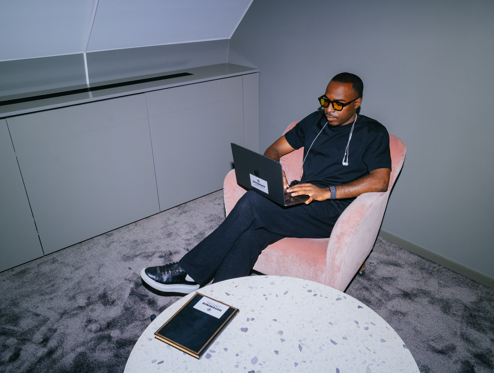

Individuell process.
Djupare än ett samtal.
Ett samtal kan skapa klarhet. En process byggs över tid.
Genom det vi ser tillsammans, det som händer däremellan och det som visar sig när verkligheten kommer.
Vi börjar inte om nästa gång vi ses. Det som redan har byggts bär nästa del.

Arbetet
Sessioner
Individuella samtal byggda runt din aktuella verklighet, dina mönster och din riktning.
Processytan
Din individuella arbetsyta där riktning, material och kvitton samlas och utvecklas över tid.
Träningsfältet
Före- och efterreflektioner och konkreta beteenden att omsätta i träning, match, arbetet och vardag.
Mellan sessionerna
Kontakt för att sortera det som sker, hålla riktningen och tydliggöra nästa rätta steg.
Uppföljning
Vi återkommer till det som tränats och följer vad som blir synligt i beteendet.
Samtalet är en del.
Verkligheten är träningsfältet.
Det intressanta är inte bara vad som blir tydligt i samtalet. Det intressanta är vad som händer när verkligheten testar det.
Där börjar vi se skillnaden mellan det du förstår och det du börjar bära.
Det som händer mellan samtalen blir därför inte ett avbrott från processen. Det blir en del av den.
Över tid behöver mindre förklaras från början. Mer kan förstås i sitt sammanhang.
Mönster blir tydligare. Förändring går att följa. Det som återkommer får större betydelse.
Förståelse behöver bli beteende. Och beteendet lämnar kvitton.
Individuell framför.
Ett system bakom.
Det finns en struktur bakom arbetet. Men du möter inte hela systemet. Du möter den del av det som din verklighet kräver.
Det som är relevant idag behöver inte vara relevant längre fram. Processen utvecklas när verkligheten förändras.
Systemet anpassas efter människan. Inte människan efter systemet.
En process.
Inte en serie samtal.
Du behöver inte komma med färdiga svar. Vi börjar där du är.
Det verkligheten visar avgör vad vi bygger vidare på.